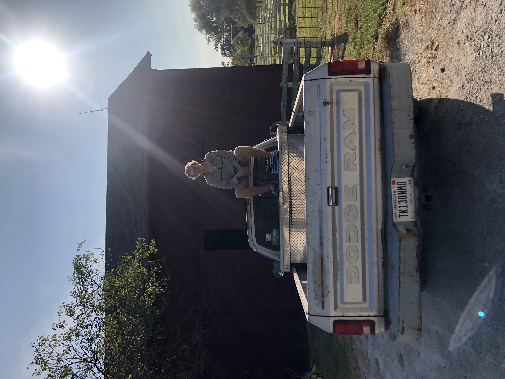
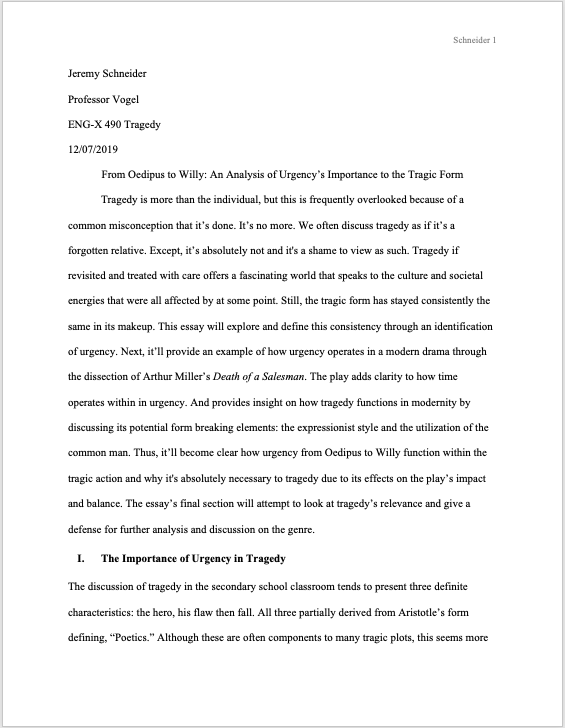
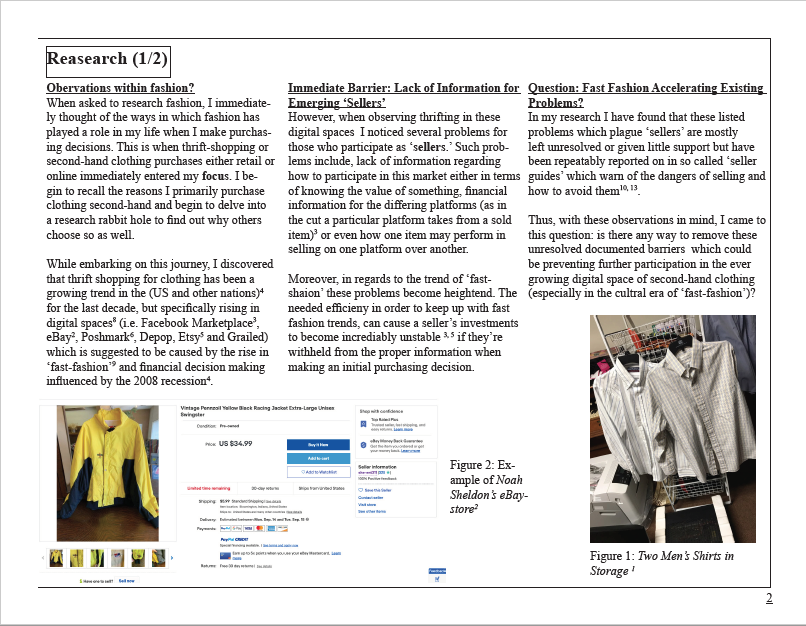
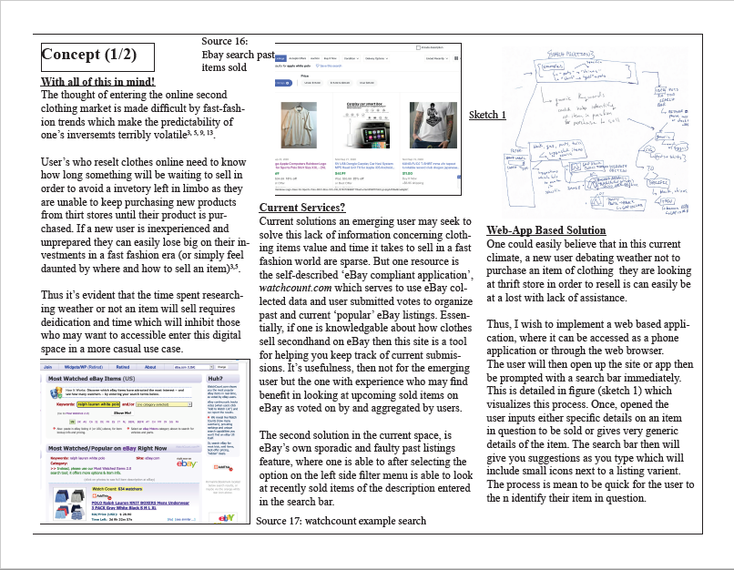

-Introduction-
Yup. That's me.
You may be wondering how I got here.
Well...
It all started when I decided to take Informatics 101.


-About Me-
Hello! My name is Jeremy Schneider. I was raised in the Ohio River Valley Region and will be graduating this fall at Indiana University. As of now, I live in Bloomington and help my dad with his HVAC shop and actively hike with my fiance when I am not researching or working on old hardware.
As for school, I enjoy studying culture, performance, religion and literature which is why I have chosen to major in English Literature. Although I am majoring in the humanities I have a fascination for the hisotry of computing and computer science. So despite simply being an English B.A. I have found that my experience rebuilding vintage and modern hardware along with manipulating their operating systems serves to grow upon my own understanding of literature's interconnectivity with other subjects, as it can be found in conversation with science, philosophy, mathematics, and history.
This recognition and engagement of the texts then leaves me with a certain attentiveness and mindfulness towards the world. As in my world is not so distant or separate from those that we read about but evidently shared. For once this connection is realized and the alienation is removed, I truly believe an empathetic perspective can flourish and I will try to understand and embrace others in my own and outside communities. With that said, I am aware this connection I draw between the humanities and computation is strange but I often find myself reassured by its relevancy. So much so that combining these two spaces is what motivates me everyday.
Also! If you would like to get in contact with me here's my Handshake profile.
-Projects-
Tragedy (fall 2019)
Since being introduced to Latin and Greek mythology in high school--and Roman and Greek philosophers in debate and philosophy club, I have always been drawn to the classics. I have always found through my own reading of these texts a sense of connection that is entirely present, as in I would argue that I am not seeking for a nostaligic enviroment to dwell in by studing these texts. I love these texts and the worlds they invoke because they help me understand my own world. More so, in the act of 'going back' by engaging with these texts I find that I can always find their influential roots traced in modern works. However, I have often felt that these texts can be discussed with the focus on hero and plot in such a way that feels practicly scientific and methodical.

This is then explored further in an essay project, which I wrote under the advisement of
Professor Shane Vogel and eventually awared the 'Albert Wertheim Essay
Prize' in the spring of 2020:
"From Oedipus to Willy: An Analysis of Urgency’s Importance to the Tragic Form"
[To access page one of the essay click here. For more information or access to this project feel free to contact me at jerschne@iu.edu]
{kind=link}
HCI/d Concept for Digital Thrifting (fall 2020)
Observations within Fashion
When asked to research fashion in regard to technological design, I
immediately thought of the ways in which fashion has played role in
my life when I make purchasing decisions. This is when thrift-shopping or
second-hand clothing purchases either retail or online immediately entered
my focus. I begin to recall the initial reasons I primarily purchase clothing
second-hand and begin to delve into a research rabbit hole to find out why others
choose so as well. While embarking on this journey, I discovered that thrift
shopping for clothing has been a growing trend in the (US and other nations)
for the last decade, but specifically rising in digital spaces (i.e. Facebook
Marketplace, eBay, Poshmark, Depop, Etsy and Grailed) which is suggested
to be caused by the rise in ‘fast-fashion’ and financial decision making post
the 2008 recession.
Why care about thrift-sellers in digital spaces?
Well with the rise of fast fashion, general spending
habits of the U.S. population, and access of those on these platforms,
I found it necessary to examine and try to solve the barriers which prevents
participation. Why I care? Because participation in this growing digital
market, leads to pro-social behaviors (as in these
digital markets rely on the connections individuals make with those who
sell used goods in their physical communities)--thus leading to a form environmental
responsibility by entering a ‘sustainable’ practice, and a way for individuals
to gain financial rewarded while personally growing through learning about
the culture as a whole (for example why might someone want to purchase an item),
and finally this space has been show in several studies to offer mental
health (self-care) benefits.
 
I completed this concept for INFO -I300 (Human Computer Interaction and Design)
and like the Tragedy Project it showcases my research and presentation skills. More so, as
a requirement for this project I had to spend two weeks
researching the topic space learn Adobe Indesign along with the topics user space .
[To acess an example page of this project's research click here or an example
of a concept page click here. For more information or a complete copy of the Concept
Deliverable please email me at jerschne@iu.edu]
{kind=link}
{kind=link}